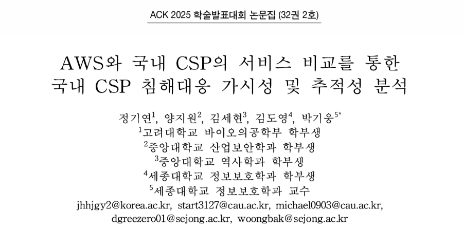

Publication · ACK 2025
AWS와 국내 CSP의 서비스 비교를 통한 국내 CSP 침해대응 가시성 및 추적성 분석
AWS와 NAVER Cloud, NHN Cloud, kt Cloud, Gabia Cloud의 보안·모니터링 서비스를 비교하고, 국내 CSP 환경에서 침해대응 시 확보 가능한 로그, 추적 정보, 탐지 가시성의 한계를 분석했습니다.
AWS · NAVER Cloud · NHN Cloud · kt Cloud · Gabia Cloud · Incident Response · Cloud Security